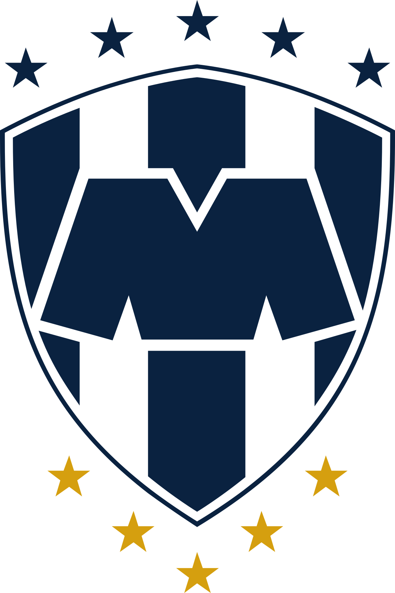

CF Monterrey
El Club de Futbol Monterrey,coloquialmente conocido como "Rayados" o simplemente "Monterrey", abreviado como "C. F. Monterrey" es un club de fútbol profesional con sede en Monterrey, México. Fue fundado el 28 de junio de 1945, juega de local en el Estadio BBVA y está ubicado en Guadalupe, en la zona metropolitana de Monterrey.
Utiliza camiseta blanca y azul a rayas verticales. Es el cuarto equipo mexicano con más torneos consecutivos en primera división con 85, y el sexto equipo con más torneos totales con 87.
Monterrey ha obtenido cinco títulos de Primera División de México y tres de Copa México. A nivel internacional, el equipo ganó en cinco ocasiones (tres de ellas consecutivas) la Liga de Campeones de la Concacaf y también una Recopa de la Concacaf. Es el único equipo perteneciente a la Concacaf que subió al podio del mundial de clubes en dos ocasiones, luego de obtener el tercer lugar en el 2012 y 2019. Monterrey es además el tercer equipo a nivel global con más puntos en la tabla del Mundial de Clubes con diecisiete puntos.
El equipo que le genera mayor rivalidad deportiva a la institución son los Tigres de la UANL, con quien se enfrenta en el llamado Clásico Regiomontano.
Plantilla actual
A la fecha de realizar esta página, un ejemplo del 11 inicial de jugadores del club, basados en su último compromiso, son:
- E. Andrada
- E. Aguirre
- V. Guzman
- S. Vegas
- G. Arteaga
- L. Romo
- J. Rodriguez
- J. Cortizo
- S. Canales
- J. Gallardo
- G. Berterame
Compromiso más reciente
A la fecha de realizar esta página, el video a continuación presenta el más reciente compromiso del CF Monterrey en la Liga MX:
Estadísticas recientes
A la fecha de realizar esta página, estas son algunas de las estadísticas del CF Monterrey en este actual torneo:
| PJ | G | E | P | GF | GC | DG | Pts |
|---|---|---|---|---|---|---|---|
| 6 | 4 | 2 | 0 | 12 | 5 | +7 | 14 |